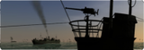
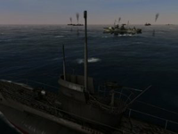
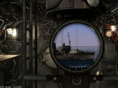
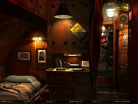
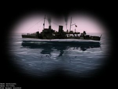

Danger from the Deep
Archivierte Anleitung
Dieser Artikel wurde archiviert, da er - oder Teile daraus - nur noch unter einer älteren Ubuntu-Version nutzbar ist. Diese Anleitung wird vom Wiki-Team weder auf Richtigkeit überprüft noch anderweitig gepflegt. Zusätzlich wurde der Artikel für weitere Änderungen gesperrt.
Zum Verständnis dieses Artikels sind folgende Seiten hilfreich:
Danger from the Deep  (Die Gefahr aus der Tiefe) ist eine freie U-Boot-Simulation, die im Zweiten Weltkrieg spielt. Die Simulation wird zur Zeit für Linux und Windows entwickelt und ist noch in der Alpha-Phase, aber schon gut und auf deutsch spielbar.
(Die Gefahr aus der Tiefe) ist eine freie U-Boot-Simulation, die im Zweiten Weltkrieg spielt. Die Simulation wird zur Zeit für Linux und Windows entwickelt und ist noch in der Alpha-Phase, aber schon gut und auf deutsch spielbar.
Das Ziel der Entwickler ist es, eine interessante und möglichst realistische Simulation zu programmieren, in der es nicht darum geht den Krieg zu verherrlichen, sondern Taktiken und Strategien zu verstehen. Absolute Highlights sollen ein vollständig implementierter Netzwerkmodus und der Kampf zwischen Kriegsschiff und U-Boot sein.
|  |  |  |  |
| Außenansicht | Periskopansicht | Kapitänskabine | Fernrohransicht |
| Die Audio-, Video- und Multimediadateien sowie die 2D/3D-Bebilderung stehen unter der CC AT-NC-ND 2.0/2.5-Lizenz . | |||
Installation¶
Debian-Paket¶
Hinweis!
Fremdpakete können das System gefährden.
Das DEB-Paket dangerdeep_VERSION_i386.deb findet man auf der Downloadseite des Projekts [2]. Zusätzlich muss noch die Datei dangerdeep-data-VERSION.zip heruntergeladen und der Inhalt nach /usr/share/games/dangerdeep/ entpackt werden.
Per Installationsprogramm¶
Folgende Pakete müssen installiert [1] werden:
libsdl-mixer1.2
libsdl-net1.2
fftw3
Das Installationsprogramm dangerdeep-VERSION-linux-installer.bin steht ebenfalls auf der selben Seite von dangerdeep.sourceforge.net zum Herunterladen bereit.
Hinweis:
Bei diesem Installationsprogramm handelt es nicht um einen Loki-Installer, er verhält sich jedoch ähnlich. Allerdings erscheint die Simulation nicht im Loki-Uninstaller, deshalb muss das Deinstallationsprogramm selbst ausgeführt werden.
Für die Installation sind Root-Rechte erforderlich, da das Spiel immer in das Verzeichnis /usr/share/games/dangerdeep installiert wird. Aus dem Grund bringt das Verändern des Installationspfades nichts.
Anschließend wechselt man in das Verzeichnis des Installationsprogramms und startet es, nachdem man die Datei ausführbar gemacht hat [3], mit Root-Rechten [4].
cd /Pfad/zum/Installationsprogramm chmod u+x dangerdeep-VERSION-linux-installer.bin sudo ./dangerdeep-VERSION-linux-installer.bin
Nach erfolgreicher Installation kann man die Simulation über den Starter Danger from the Deep auf dem Desktop starten. Wer die Simulation über das Menü starten möchte, muss den Menüeintrag über den Befehl dangerdeep selbst erstellen [5].
Benutzung¶
In der aktuellen Version (0.3.0) kann man zwischen 3 Missionen wählen:
Spielablauf¶
Angriff auf ein Kriegsschiff¶
Diese Mission wurde noch nicht implementiert.
Geleitzugschlacht¶
In dieser Mission, im Zeitraum von 1939 bis 1945 spielend, wird man in die Position eines deutschen U-Boot-Kapitäns, im Nordatlantik agierend, versetzt mit dem Ziel alliierte Kauffahrer zu belauern und zu jagen. Man kann zwischen verschiedenen U-Boot-Typen wählen und Geleitzüge und Geleitschutz in verschiedenen Größen und zu verschiedenen Tageszeiten einstellen. Zur Zeit unterstützte U-Boote sind: VIIC, IIA, IIB, IIC, IID, IX und XXI.
Historische Mission¶
In diesen Missionen sollen U-Boot-Kämpfe, die zur Zeit des Zweiten Weltkriegs stattgefunden haben, detailliert nachgestellt und spielbar werden. Bis jetzt sind jedoch nur Trainingsmissionen verfügbar.
Tastenkürzel¶
Die hier aufgelisteten Tastenfunktionen sind die Standardfunktionen. Diese können jedoch problemlos im Spiel unter "Optionen" verändert werden.
| Allgemeine Steuerung | |||
| Esc | Zum Menü | Pause | Pause/Wiederaufnahme des Spiels |
| Druck | Bildschirmfoto erstellen | Zahlenblock + / - | Zeit schneller/langsamer |
| Kamera-Steuerung | |||
| + | Kartenansicht vergrößern | - | Kartenansicht verkleinern |
| F1 | Manometer | F7 | Schadenskontrolle |
| F2 | Periskop (nur bis zu einer bestimmten Tiefe verfügbar) | F8 | Kapitänskabine (Zugriff auf Logbuch, Karriereinfos, etc.) |
| F3 | UZO (Zielfernrohr, nur an der Wasseroberfläche) | F9 | Sonar-Steuerung (abhängig vom U-Boot-Typ) |
| F4 | Brücke (nur an der Wasseroberfläche) | F10 | Außenansicht |
| F5 | Kartenansicht | F11 | TDC (Torpedo Data Computer) |
| F6 | Torpedokontrolle | F12 | Torpedo-Einstellungen |
| P | Periskoptiefe | 0 | Periskop ausfahren/einfahren |
| D | Schnorcheltiefe | F | Schnorchel ausfahren/einfahren |
| S | Oberfläche | V | Sicht in Fahrtrichtung |
| U-Boot-Steuerung | ||||
| ← | Ruder links 15°, bis zu 30° | ⇧ + ← | Ruder hart links | |
| → | Ruder rechts 15°, bis zu 30° | ⇧ + → | Ruder hart rechts | |
| ↑ | Tiefenruder hoch 10°, bis zu 30° | ⇧ + ↑ | Tiefenruder stark hoch 20° | |
| ↓ | Tiefenruder runter 10°, bis zu 30° | ⇧ + ↓ | Tiefenruder stark runter 20° | |
| ⏎ | Ruder mittig | |||
| 1 | Kleine Fahrt | 6 | Maschinen stopp | |
| 2 | Langsame Fahrt | 7 | Rückwärts, langsame Fahrt | |
| 3 | Halbe Fahrt | 8 | Rückwärts, halbe Fahrt | |
| 4 | Volle Fahrt | 9 | Rückwärts, volle Fahrt | |
| 5 | Äußerste Kraft | |||
| C | Alarmtauchen | H | Fahrt in Sichtrichtung | |
| ⇧ + , | Außenansicht schnell links drehen | ⇧ + . | Außenansicht schnell rechts drehen | |
| Mausrad | Ansicht vergrößern/verkleinern | |||
| Waffen-Steuerung | |||
| Ziel auswählen | I | Ziel identifizieren | |
| ⇧ + 1 | Torpedo Rohr 1 los | ⇧ + 4 | Torpedo Rohr 4 los |
| ⇧ + 2 | Torpedo Rohr 2 los | ⇧ + 5 | Torpedo Rohr 5 los |
| ⇧ + 3 | Torpedo Rohr 3 los | ⇧ + 6 | Torpedo Rohr 6 los |
| T | Torpedo abfeuern | ||
Problemlösung¶
Bei Problemen das Spiel zu starten kann es helfen die Datei ~/.dangerdeep/config zu öffnen um die Werte
<use_hqsfx value="true" />
<use_shaders value="true" />
<use_shaders_for_water value="true" />alle auf false zu stellen und die Datei abzuspeichern. Beim nächsten Start sollte nun das Spiel starten.
Deinstallation¶
Die Simulation wird deinstalliert, indem man das Deinstallationsprogramm im Installationsverzeichnis ausführt [4]:
sudo /usr/share/games/dangerdeep/uninstall

Infobox¶
| Danger Deep | |
| Originaltitel: | Danger from the Deep |
| Genre: | U-Boot-Simulation |
| Sprache: |  |
| Veröffentlichung: | 2006 |
| Publisher: | Entwickler von Danger from the Deep |
| Systemvoraussetzungen: | |
| - Betriebssystem | Linux (oder Windows® 98, ME, 2000, XP, Mac) |
| - Steuerung | Maus und Tastatur |
| - Prozessor | 1000 MHz (empfohlen: 1500 MHz) |
| - Arbeitsspeicher | 256 MB RAM (empfohlen: 512 MB RAM) |
| - Grafikkarte | OpenGL-1.5/2-kompatible Grafikkarte |
| Medien: | Installationsprogramm |
| Läuft mit: | nativ |
- Erstellt mit Inyoka
-
 2004 – 2017 ubuntuusers.de • Einige Rechte vorbehalten
2004 – 2017 ubuntuusers.de • Einige Rechte vorbehalten
Lizenz • Kontakt • Datenschutz • Impressum • Serverstatus -
Serverhousing gespendet von